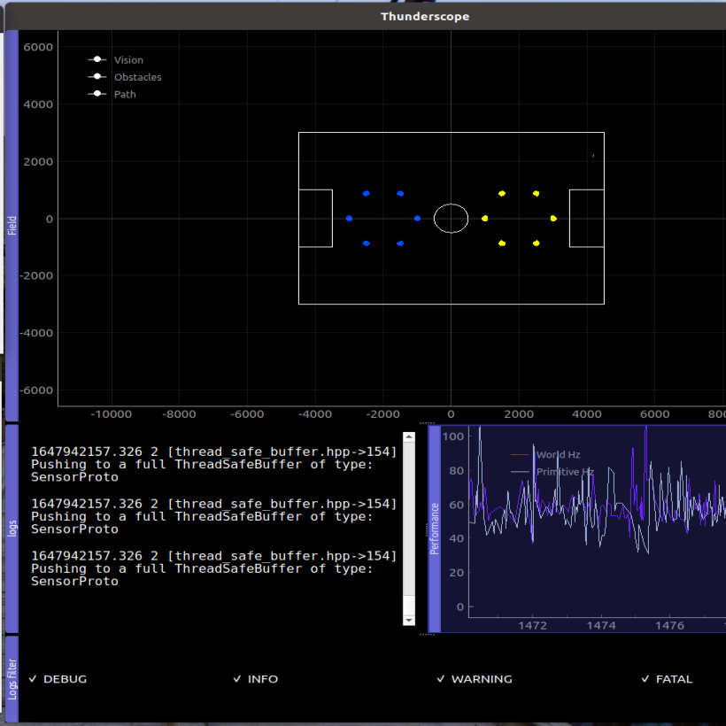
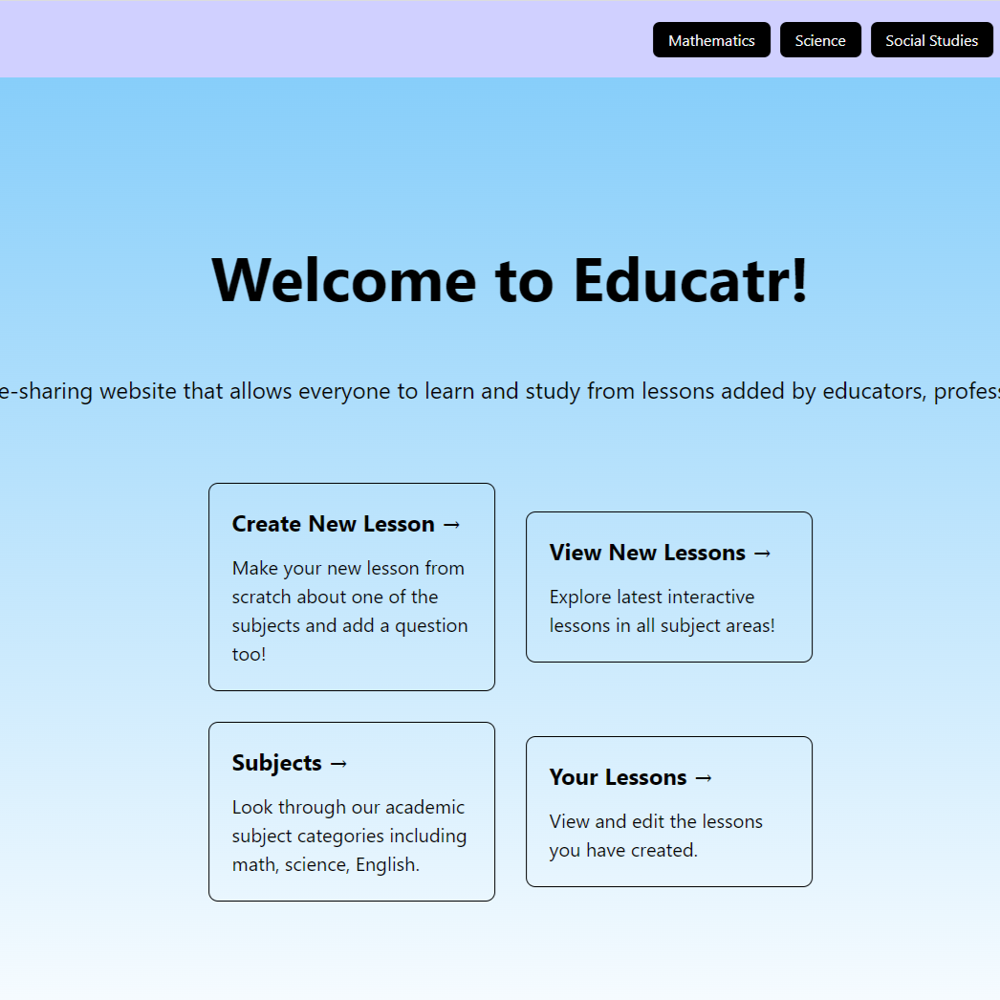

Thunderbots Robot Visualizer
-- Python, C++, PyQt, Bazel, Linux --
I worked on developing a visualizer to simulate robot soccer gameplay. The visualizer was built using PyQt and receives information from the
backend via protobufs. I worked on the console widget, allowing various types of logging messages to be displayed in real time.
New features are continuously being added to facilitate the development of new gameplay software and debugging.
Self-Driving Car Simulation
-- Python, OpenCV, ROS, Tensorflow, Linux --
This project is part of a machine learning course, ENPH 353. The objective was to simulate a self-driving car in ROS Melodic.
I developed software to follow the road, detect other traffic, and to yield to pedestrians.
I also trained a convolutional neural network using the Keras framework to detect license plates and read them correctly.

NwHacks 2022 - Educational Website
-- TypeScript, React, Spring Boot, Node.js, MongoDB --
The website is used to create and share interactive lessons for others to learn in any academic
subject.
Creators can write lessons using a text editor with full Markdown and Latex support.
They can also customize their own questions to quiz the learners. I mainly worked on the frontend and created
over 10 React components, like a multiple choice quiz editor that was be used extensively across the website.
Autonomous Soda Can Retrieving Robot
-- C++, STM32 Bluepill, PlatformIO, Soldering, Oscilloscope --
The robot is the final deliverable of a 4-month project. It drives and follows a tape path, and
detects and picks up soda cans to drop off vertically in a box. I specifically worked on the
control software, the driving algorithm, and tuning of the robot arm to achieve 95% grabbing accuracy.
My team placed 3rd out of 16 teams based on performance.
Tic-Tac-Toe Game
-- Java, AWT, IntelliJ --
Singleplayer game coded in Java. It has a functional GUI and the player plays against a computer
algorithm. The program automatically checks if there is a winner after each move and also keeps track of score.
Image Processing Library
-- Java, JUnit, AWT, IntelliJ--
Java project where I developed over 15 image-transforming algorithms such as green screen,
posterize, and rotating images. I also wrote my own test cases using JUnit by designing algorithms to generate images, achieving 99% code coverage.
{kind=link}
{kind=link}
{kind=link}
{kind=link}
{kind=link}
{kind=link}